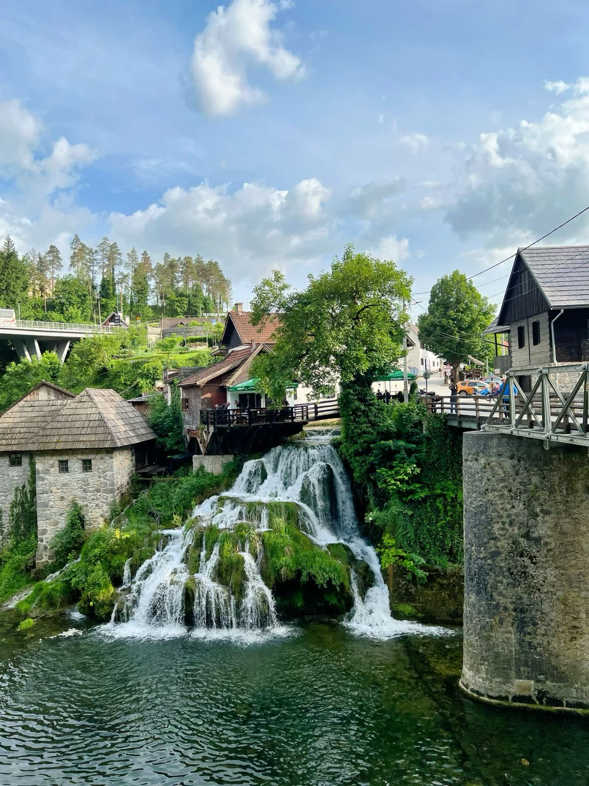

Rastoke · il villaggio sull'acqua
01 · Acqua e mulini
Rastoke
Un piccolo villaggio costruito tra corsi d'acqua, cascate e antichi mulini. È una prima sosta che introduce subito il lato più verde del viaggio. In estate si può rallentare ancora di più e dedicare tempo alle aree balneabili del vicino fiume Korana.